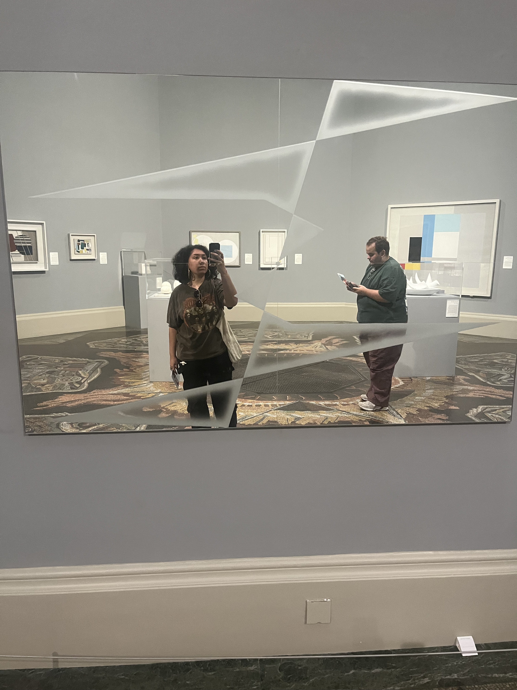
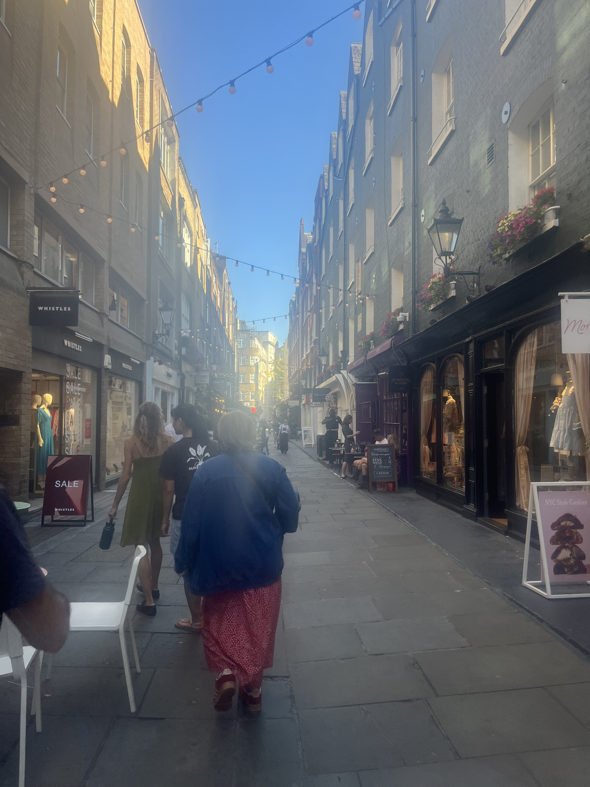
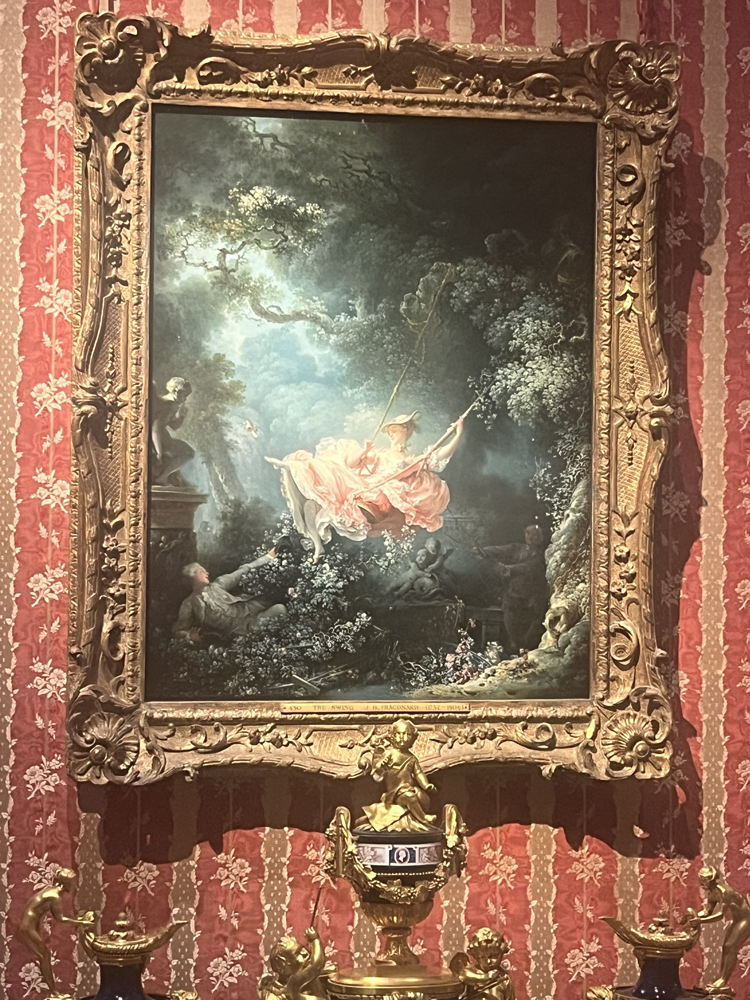

Week 1
Displacement
You walk the streets of London feeling an eerie sense of familiarity and foreignness. The memories of your high school adventures soak through the soles of your feet up towards a heart full of wonder and anxiety. Your eyes throb behind your heavy eyelids as you rush to your Notes app to jot down your mildly embarrassing in-flight interactions with the posh British man to your right. Raucous laughter, drunken teases, and the humble chime of your newly chosen summer alarm echo through your brain each day, each night, and each morning. Meeting eyes with your professor for the first time since your cetacean puppetry escapades across the pond offer a sense of comfort amidst an incredible density of new horizons. You check your phone on the lift to purchase some crisps and stop by the loo only to realize that the Fourth of July is passing as a simple, unharmonious date on the calendar. Your mind can't manage to settle as the charming hotel engineer tells you that the building is two and half times older than the country listed on your passport. Your gaze lingers on the pale faces of the supposedly Black and Middle Eastern subjects of the historic paintings in the Tate Britain, wondering if they too notice that their cohort in the front rows of the RSC looks a bit different than the rest of the audience. The gentle Royal Drury Theatre staffers help you find your seat during the applause following the opening number; thank goodness you got to hear the honey-smooth vocal stylings of a satisfactory (though not exemplary) Hercules going the distance right along with you. You take a deep breath as you take in all that lies before you, trying to shake the worry that you won't feel like a stranger here until you're jet set to LaGuardia International Airport.
Passion
Your glass of Rose shimmers under the moody lights as a gorgeously powerful Hippolyta towers over you in a theatre you begin to fantasize about directing in someday. Your partially unpacked suitcase lays abandoned on the floor in the middle of the night while your best friend, finally having escaped a monotonous family dinner, muses about their whirlwind summer romance. You miss a few lines of the show as you ponder if there's any truth to Mrs. Culver's claim that there's some things a single woman just couldn't understand. The 10am train ride is peppered with mind-numbingly stupid quips breaking up the joyous rush of rooting through Stack Overflow and finding the exact answer you need. The energy coursing through the theatre as the clock ticks down 7pm compels the corners of your mouth to settle into the brightest of smiles without a second thought. This--all of this--is who you are and how you always hope to be. Your heart pangs as you witness the loving touch of a mother redressing her bright-eyed daughter's feet at the mall kiddie fountain and of a father swinging his adorable son upside down on the Dooridge train platform. To be human is a beautiful thing. To showcase that on stage is even more magical. You can't help but love that you love what you do.
Release
You feel like a little kid again as your professor bids you goodbye and you're off on your own at each new destination. The nagging thoughts of how you'll fare back home for three weeks take a backseat once you find a rhythm chatting with the lovely girl in your class who isn't so different than you after all. "Guys, last night was a movie..." you all joke in symphony. How could you ever imagine that you'd be dancing like no one's watching with the illustrious Pink Fairy, wholly unbothered by the soreness of your throat as she dubs you one of her personal hype women. Everyone talks about how going abroad changes them, but you feel unequivocally yourself. You're still you when you're 4000 miles away from home. And you're pleasantly surprised by how good it feels to say so.
